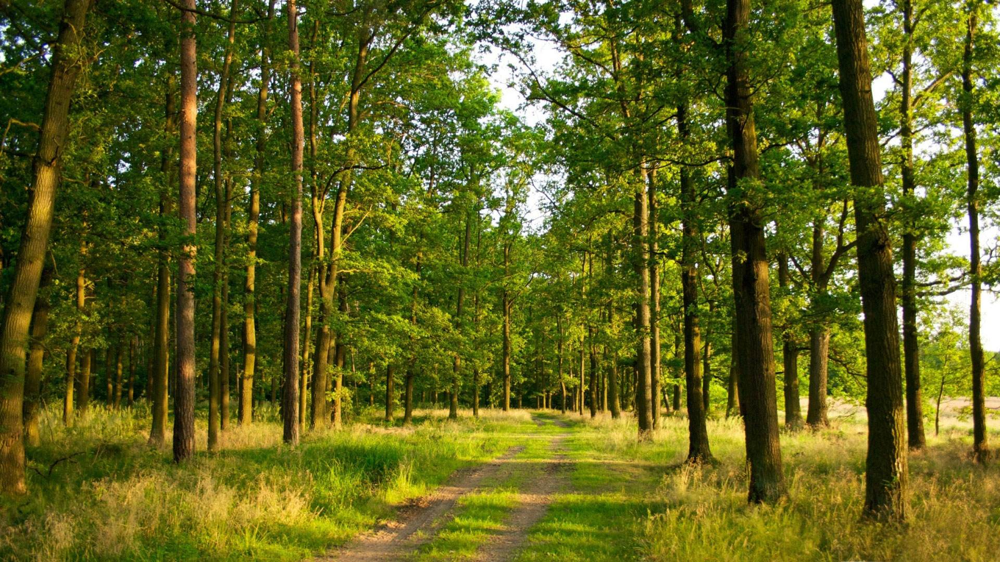

唐文城
2017114305
唐文城
2017114305
专题制图与空间信息可视化
森林覆盖率是指森林面积占土地总面积的比率。一般用百分比表示。是反映一个国家 (或地区) 森林资源和林地占有的实际水平的重要指标。
在计算森林覆盖率时，森林面积包括郁闭度0.2以上的乔木林地面积和竹林地面积，国家特别规定的灌木林地面积、农田林网以及四旁（村旁、路旁、水旁、宅旁）林木的覆盖面积。森林覆盖率 是反映森林资源的丰富程度和生态平衡状况的重要指标。
不同的国家森林覆盖率的计算采取不同的方法。如中国森林覆盖率系指郁闭度0.2以上的乔木林、竹林、国家特别规定的灌木林地面积，以及农田林网和村旁、宅旁、水旁、路旁林木的覆盖面积的总和占土地面积的百分比。森林由于受地理环境的制约和影响，地区分布很不平衡。
